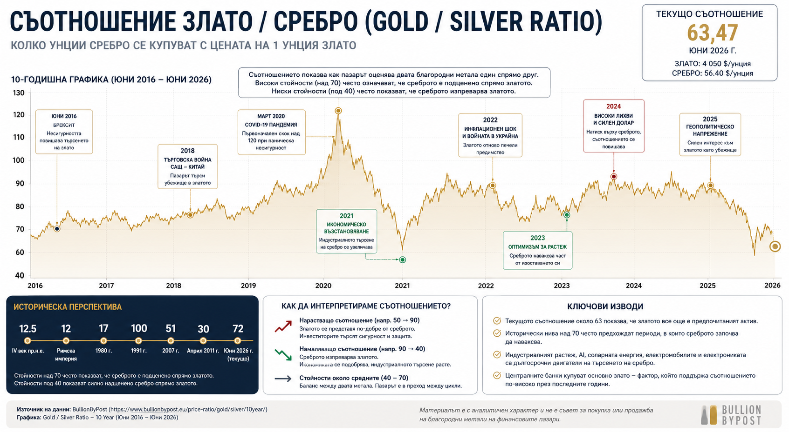

Злато или сребро?
В продължение на векове златото и среброто вървят ръка за ръка. И двата метала са били използвани като пари, и двата са служили за съхранение на богатство, и двата преживяват периоди на еуфория и тежки корекции. Въпреки това те никога не са били една и съща инвестиция. Докато повечето инвеститори разглеждат двата благородни метала като близки заместители, историята показва, че те реагират по напълно различен начин на икономическите цикли, инфлацията, лихвените проценти и промените в индустриалното производство.
Днес това разграничение изглежда по-важно от всякога. След няколко години на рекордни покупки от страна на централните банки, геополитическо напрежение и висока инфлация, златото се превърна в един от най-коментираните активи на световните финансови пазари. Среброто също отбеляза силен ръст, но продължава да остава в сянката на своя по-известен „роднина“. Именно това поставя един интересен въпрос – дали пазарът не подценява ролята на среброто в следващия голям цикъл при благородните метали?
Един от най-старите индикатори: Gold/Silver Ratio
Отговорът не се крие само в цената на златото или на среброто поотделно. Професионалните инвеститори от десетилетия следят един далеч по-интересен показател – съотношението между цената на двата метала, известно като Gold/Silver Ratio. Това е един от най-старите пазарни индикатори в историята на финансовите пазари и често се оказва много по-полезен от самата цена на който и да е от двата актива.
За да разберем защо това съотношение е толкова важно, първо трябва да си отговорим на един друг въпрос – защо въобще златото и среброто се държат толкова различно.
Защо двата метала се държат различно
Въпреки че и двата метала попадат в категорията „благородни“, техните икономически функции са почти противоположни. Златото е преди всичко паричен актив. То практически няма значение дали световната икономика расте или се свива. Повече от половината от търсенето му идва от инвестиции, централни банки и резерви. Именно затова при финансови кризи, банкови сътресения или геополитическо напрежение капиталът почти автоматично започва да се насочва към него.
Среброто обаче живее едновременно в два различни свята. От една страна то също е благороден метал и служи като средство за съхранение на стойност. От друга страна обаче над половината от глобалното му потребление идва от индустрията. То участва в производството на соларни панели, полупроводници, медицинска техника, батерии, електромобили, телекомуникационно оборудване и десетки други високотехнологични приложения. Именно затова среброто реагира много по-силно на икономическия цикъл. Когато световната икономика ускорява растежа си, индустриалното търсене започва да изпреварва инвестиционното и среброто често поскъпва значително по-бързо от златото. При забавяне на икономиката процесът се обръща.
Какво показва историята на съотношението
Историята прекрасно илюстрира тази разлика. През инфлационните години на 70-те години на миналия век и двата метала преживяват впечатляващ възход, но именно среброто се превръща в истинската звезда на пазара. Между 1976 и началото на 1980 година цената му нараства многократно, подхранвана както от високата инфлация, така и от опита на братята Хънт да концентрират огромна част от световното предлагане. В резултат съотношението между цената на златото и среброто пада до едва около 17 – едно от най-ниските нива в съвременната история.
След това започва точно обратният процес. След като Федералният резерв под ръководството на Пол Волкър повишава лихвените проценти до двуцифрени стойности, инфлацията постепенно е овладяна, а благородните метали навлизат в продължителен мечи пазар. Именно тогава среброто започва да губи много по-бързо от златото. През 1991 година Gold/Silver Ratio достига приблизително 100, което означава, че за стойността на една унция злато могат да бъдат закупени почти сто унции сребро. Исторически това остава една от най-екстремните оценки между двата метала.
Този цикличен модел се повтаря почти през всяко десетилетие. След финансовата криза през 2008 година централните банки по света започват масивни програми за количествени улеснения. Лихвените проценти се понижават почти до нулата, ликвидността на финансовите пазари експлодира, а инвеститорите започват масово да търсят защита срещу обезценяването на валутите. Златото достига нов исторически връх, но именно среброто отново се превръща в най-бързо поскъпващия метал. През април 2011 година Gold/Silver Ratio отново се понижава до около 30, което показва колко силно среброто започва да изпреварва златото в последната фаза на бичия пазар.
Следващите петнадесет години обаче отново обръщат картината. Забавянето на индустриалното производство, по-високите реални лихви и силният долар постепенно връщат предимството на златото. Днес, при цена на златото около 4050 долара за тройунция и цена на среброто приблизително 56.40 долара, съотношението възлиза на около 72. Само по себе си това число изглежда абстрактно. Историческият контекст обаче го прави изключително интересен.
| Период | Gold/Silver Ratio |
|---|---|
| IV век пр.н.е. | 12.5 |
| Римска империя | 12 |
| 1980 г. | 17 |
| 1991 г. | 100 |
| 2007 г. | 51 |
| Април 2011 г. | 30 |
| Юни 2026 г. | 64 |

Самата история на това съотношение е своеобразна история на световната икономика. Когато инвеститорите се страхуват, предпочитат златото и съотношението се покачва. Когато вярват в икономическия растеж, индустриалното производство и технологичния напредък, среброто започва постепенно да наваксва изоставането си и съотношението започва да намалява. Именно затова Gold/Silver Ratio често се използва не само като индикатор за относителната оценка между двата метала, но и като своеобразен барометър на глобалните икономически очаквания.
Какво ни казва съотношението от 64?
Тук е важно да направим едно разграничение, което много инвеститори пропускат. Gold/Silver Ratio не е индикатор, който казва дали златото или среброто ще поскъпнат утре. То измерва нещо много по-интересно – как пазарът оценява двата метала един спрямо друг в конкретния момент от икономическия цикъл.
Днешното съотношение от приблизително 64 поставя пазара в една любопитна зона. То е значително над нивата, наблюдавани в края на последните големи бичи пазари при благородните метали, когато съотношението падаше между 17 и 30, но остава далеч под екстремните стойности около 100, които сме виждали при тежки мечи пазари и моменти на почти пълна капитулация при среброто.
Казано по друг начин, пазарът все още не вярва, че среброто е готово да започне нов цикъл на сериозно превъзходство над златото.
Именно това прави настоящата ситуация толкова интересна. През последните няколко години почти цялото внимание беше насочено към златото. Централните банки купуват рекордни количества физически метал, геополитическите конфликти увеличават търсенето на защитни активи, а високият глобален дълг поддържа интереса към традиционните убежища. Всички тези фактори работят почти изцяло в полза на златото.
Среброто вече не е просто метал, а стратегическа суровина
Среброто обаче има едно огромно предимство, което трудно може да бъде игнорирано през следващото десетилетие. То вече не е просто благороден метал. То постепенно се превръща в стратегическа индустриална суровина.
Само преди двадесет години голяма част от потреблението на сребро беше свързано с фотографията, бижутерията и монетосеченето. Днес структурата на пазара изглежда напълно различно. Все по-голяма част от глобалното търсене идва от сектори, които практически определят бъдещето на световната икономика.
Всеки соларен панел съдържа сребро. Всеки електромобил използва значително повече сребро от автомобилите с двигатели с вътрешно горене. Полупроводниците, центровете за данни, телекомуникационното оборудване, медицинската техника и дори инфраструктурата около изкуствения интелект използват именно този метал благодарение на неговата изключително висока електропроводимост.
Именно тук започва голямото структурно различие между двата метала. Докато търсенето на злато зависи предимно от инвестиционните настроения, търсенето на сребро зависи едновременно от инвестиционния цикъл и от индустриалния растеж. Това означава, че ако през следващите години световната икономика навлезе в нов период на ускорени капиталови инвестиции, изграждане на електропреносна инфраструктура, соларни мощности и центрове за данни, среброто би могло да получи втори двигател на растежа, какъвто златото няма.
Дефицитът, който пазарът подценява
Това вече започва да се вижда и във фундаменталните данни. Световното потребление на сребро през последните години надхвърля добива, което води до последователни дефицити на физическия пазар. За разлика от златото, където огромната част от произведения метал през историята все още съществува под формата на кюлчета, резерви или бижута, голяма част от използваното сребро остава разпръснато в милиарди електронни устройства, индустриални компоненти и производствени процеси. Значителна част от него никога не се връща обратно на пазара.
Това създава една интересна асиметрия. Инвеститорите обикновено разглеждат златото като по-дефицитния актив, защото то струва многократно повече. От гледна точка на реалната наличност за индустриално потребление обаче ситуацията често е точно обратната. Физическото сребро, което може лесно да бъде доставено на пазара, е значително по-ограничено, отколкото изглежда на пръв поглед.
Защо съотношението е сигнал, а не прогноза
Разбира се, това не означава автоматично, че среброто ще започне да поскъпва по-бързо още утре. Историята показва, че Gold/Silver Ratio може да остане високо години наред. След върха през 1991 година бяха необходими почти две десетилетия, преди съотношението да се върне към нивата около 30. Пазарите могат да останат „небалансирани“ много по-дълго, отколкото инвеститорите предполагат.
Но именно затова този показател е толкова ценен. Той не служи за краткосрочно прогнозиране. Той показва къде започват да се натрупват структурните дисбаланси между двата метала.
Ако през следващите години Федералният резерв започне постепенно да понижава лихвените проценти, реалната доходност на облигациите започне да намалява, а индустриалното производство отново се ускори, исторически именно тогава среброто започва да изпреварва златото. В подобни периоди Gold/Silver Ratio почти винаги започва постепенно да се свива.
Историята вече е показвала това неведнъж – след началото на 70-те години, след кризата през 2008 година и по време на възстановяването след пандемията. Всеки път, когато ликвидността се връща в системата, икономиката ускорява, а инвеститорите започват да търсят по-висока доходност, среброто постепенно започва да наваксва изоставането си.
Дали ще се случи и този път?
Никой не може да даде категоричен отговор. Но именно съотношението между двата метала подсказва, че ако следващият голям цикъл при благородните метали бъде подкрепен не само от страх, но и от реален индустриален растеж, среброто може да се окаже много по-интересната история.
И това е една от причините все повече институционални инвеститори да спрат да гледат само цената на златото и да започнат да следят внимателно именно Gold/Silver Ratio. Защото понякога най-важният сигнал на пазара не идва от самата цена, а от връзката между два актива, които разказват различни истории за едно и също бъдеще.
Материалът е с аналитичен характер и не е съвет за покупка или продажба на активи на финансовите пазари.